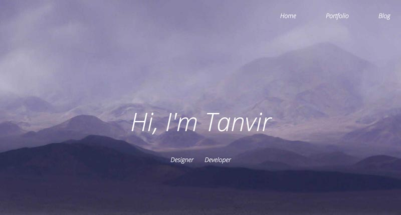

For anyone getting into the digital industry, creating a portfolio is one of the most important things to do.
Just over 9 months ago, at the start of my second year at Manchester Metropolitan University, the first little project we got given was to create a personal portfolio website. At the time this seemed like a very daunting task, as first I was very new to web development so creating a full website as the first thing back was pretty scary and secondly, a portfolio is to show off your own work… and I didn’t have any.
Despite a the few challenges that lied ahead, I was inspired to take this project and use it as a good starting point to practise and try to implement some features that I thought stood out on a portfolio website.
Looking back now its staggering to see what 9-10 months of studying and working hard can achieve, as my new portfolio is a level above the first one I created and although uses more advanced development, it still has some of the same features I wanted in my very first one.
The design for my first portfolio was very simple. Like really really simple. With the homepage just containing a full width header containing my name, a picture of myself with text underneath and a contact section, that was it.
As you can see the header for my portfolio was a subtle toned background-image with text above it. As this is one of the features I liked in portfolios I kept it and adapted it for my current website.
One thing I can criticise is the amount of white space on the page, looking back now I thought the different sections were floating randomly on a page but this is one of the things I have looked out to improve and although white space is very key for a good website, distinguishing different sections by a slight change of colour or title makes a big difference.
As it was my first time really creating a website on my own the code again was basic, no stand out CSS animations or crazy jQuery plugins but just structured HTML to create the different sections all wrapped in a main div tag.
Was it responsive? Most certainly not. Although this was one of the features I wanted the website to do, I understood the concept of responsive design but just didn’t know the best techniques and approach to address this issue.
As I realised on the last day that there were certain elements of the page that was responsive and others didn’t move an inch
Albeit this did teach me an import lesson which was to design the responsive layouts for desktop, tablet and mobile beforehand so it helps structure your code so you know exactly which elements are going to be responsive and make it a lot easier
Having a first portfolio no matter how good or bad is key because it allows you to visibly track your progress and improvements you’ve made in both your design and development. Even though my first portfolio is basic and has faults, I had a vision to create a portfolio that had certain features and with time and studying, I was able to keep improving on what I had till I created the vison I had to begin with.